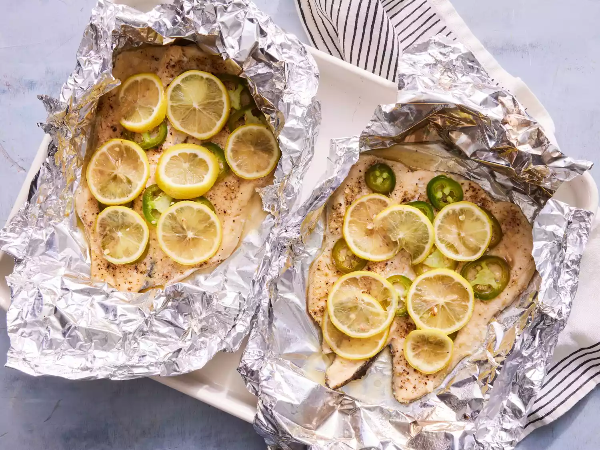

Fish in Foil

Fish cooked in foil, topped with lemons and jalepeno peppers!
Ingredients
- 2 rainbow trout fillets
- 1 tblspn olive oil
- 1 tspn ground black pepper
- 2 sheets heavy-duty alumnium foil
- 1 fresh jalepno, sliced
- 1 lemon, sliced
Steps
- Gather all ingredients. Preheat the oven to 400 degrees F (200 degrees C).
- Rinse and pat fillets dry. Rub fillets with olive oil, and season with garlic salt and black pepper.
- Place each fillet on a large sheet of aluminum foil. Top with jalapeno slices, and squeeze the juice from the ends of the lemon over fillets.
- Arrange remaining lemon slices on top of fillets.
- Carefully seal all edges of the foil to form enclosed packets. Place packets on a baking sheet.
- Bake in the preheated oven until fish flakes easily with a fork, 15 to 20 minutes depending on size of fillets.